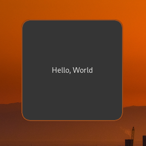

What is Fabric?
Fabric is a widgets framework written and configured in python. Fabric main goals is to provide you a simple, easy and high-level way to declare and manage desktop widgets, it follows the signal controlled flow to make events handling much easier than ever, Fabric was heavily inspired from multiple other projects on the community like eww, ags and Waybar to provide you a better experience in a familiar way
Why Fabric?
Fabric might be your choice if you already know how to program in python or if you don't know how to configure the other alternatives, Fabric is type hinted in a proper way and it integrates nicely with code editors to give you the best typed, auto-completed and docstringed experience you can get, also Fabric gives you the ability to use other python library's since Fabric is a python library at the end
Fabric and GTK
Fabric uses GTK, which's a widget and application development toolkit, Fabric uses the python bindings of GTK under the name PyGObject without GTK Fabric won't be a thing since it's one of the head dependencies of the project
What is Cairo?
Cairo is a graphics and shape drawing library, GTK (version 3) uses Cairo to draw surfaces and widgets GTK makes you able to draw custom surfaces and widgets using Cairo, see Gtk.Bin and Gtk.DrawingArea for more info also, Fabric uses Cairo to draw custom widgets that does not exist in GTK
Installing Guide
it's really simple to get Fabric working, you just...
1. Install Python
Fabric requires python version 3.11 or higher
for arch linux you do pacman -S python to get the latest version of python
2. Get The Dependencies
this step does depend on your system, this command will work for arch linux to install the dependency's using pacman
sudo pacman -S gtk3 cairo gtk-layer-shell libgirepository gobject-introspection gobject-introspection-runtime python python-pip python-gobject python-cairo python-loguru pkgconf
if you're not on Arch, you will have to figure out yourself what is the package names for your distribution
3. Install Fabric
[!TIP] Fabric is available under the arch user repository with the name
python-fabric-git
you can install Fabric globally using pip install git+https://github.com/Fabric-Development/fabric.git although we don't prefer this way because it might cause dependency issues, it's better to use a virtual environment, to get Fabric in a virtual environment you'll have to do the following
make a new folder for your new project
mkdir <your-folder-name>
change the current directory to this new folder
cd <your-folder-name>
create a new virtual environment, this command will create a virtual environment with the name venv
python -m venv venv
source the newly created virtual environment
source venv/bin/activate
now you can install packages, we can install Fabric now...
pip install git+https://github.com/Fabric-Development/fabric.git
Fabric is now installed, you can run it and use it as long as you want, yet you will be missing auto-completions and type annotations in your code editor, to get it working head over to the stubs installing guide
Getting a Stub Package
to get code auto-completions and type-annotations in your code editor you can use one of the following tools/packages, each tool/package has it's own installation guide, follow the provided like to each method and install the one you like
PyGObject-Stubs
PyGObject provides a python package that gives you simple auto-completions, it's not made to be perfect nor near that, not all gi repositories are type-annotated or docstringed, it works if you're going to stick with the documentations of GTK and Fabric
FakeGir
FakeGir is a python script that generates a overrides file, it's not considered as stubs since you will have to configure your editor to use the path to the generated files instead of the actual code in the PyGObject package files
GenGir
GenGir is my favorite, it generates an actual stubs package and installs it for you whether in a virtual environment (if any) or your global python packages
Fabric Stubs
there's an in-going process of writing a stubs package made to be used with Fabric based on a refined version of the stubs produced by GenGir, the package is still not public, this might get changed...
Prepare
here's some stuff to prepare before hopping into Fabric...
Python
Fabric is an advanced and complex python library. to take advantage of the full capabilities of Fabric, you should at least know the basics of python and have some understanding of the following concepts:
- Packages: like how to install python packages using
pip, ability to use virtual environments - Variables:
hello = "world" - Functions:
def hello(): return "world",hello = lambda: "world" - Conditionals:
if hello() == "world": ... - Loops: `for letter in hello(): print(letter)
- Exception Handling:
try: print(not_defiend),except: print("I FOUND THE UNFOUND") - Classes and Object-Oriented Programming:
class Supra(MarkII): ...
Python Learning Resource's
- Official Beginner's Guide
- Official Tutorial
- Automate the Boring Stuff, a free online book for complete beginners to programming
- Learn Python in y Minutes, complete cheat sheet for people who know programming already
- Swaroopch's free Python book
- Codeabbey, exercises for beginners
GTK
hacking into Fabric will require you having more knowledge on python and some understanding of how GTK works, read the hacking guide for GTK learn resources
Ready?
assuming you already have Fabric installed by following this [[installation-guide]] guide, let's get started by writing your first widget
Creating Your First Widget!
now (assuming you have Fabric installed) we can write our first widget
Coding the Basics...
here's an example of using Fabric to define a simple widget, you can create a new python file and add this code into it, don't worry, you don't have to understand anything since we'll walk you through every line
import fabric # importing the base pacakge
from fabric.widgets.window import Window # graps a Window object from fabric
from fabric.widgets.label import Label # gets a Label object
window = Window() # creates a new instance of the Window object and assign it to the `window` variable
label = Label("Hello, World") # creates a new Label instance and give it to the `label` variable, this label is set to "Hello, World"
window.add(label) # adds the label to the window
window.show_all() # to make the window and it's children appear up
fabric.start() # to start fabric
run the code using python path/to/your/config.py
if everything goes fine, you should see a window that looks like this: 
if you didn't already understood the code, it firstly imports Fabric and the used widgets to create this demo which's a Window and a Label, then it creates a new instance of each widget, for the label instance it get's created with the text "Hello, World", then it adds this label widget to the window and show's up that window (and all of it's children), lastly it starts Fabric so the window actually shows up
"now what?" you might be asking; "now, we do some REAL STUFF" i answer.
Level 1: Boxes
in this level, we're going to start very simple by using some boxes and labels..
import fabric # importing the base pacakge
from fabric.widgets.window import Window # graps a Window object from fabric
from fabric.widgets.box import Box # gets a Box object
from fabric.widgets.label import Label # gets a Label object
box_1 = Box(
orientation="v",
children=Label("this is the first box")
)
box_2 = Box(
orientation="h",
spacing=28, # adds some spacing between the children
children=[
Label("this is the first element in this second box"),
Label("btw, this box elements will get added horizontally")
]
)
box_1.add(box_2)
window = Window(
children=box_1 # there's no need showing up this window using `show_all()` it'll show itself because the children is already passed
)
fabric.start()
result (notice the alignment of the labels)

see this visual representation so you understand what's going on more clearly

now you probably got an idea about how box containers work with different orientations, we can follow up now
Level 2: Buttons
without any further ado, let's see how the code will look like first...
import fabric
from fabric.widgets.box import Box
from fabric.widgets.label import Label
from fabric.widgets.button import Button
from fabric.widgets.window import Window
def create_button():
button = Button(label="click me")
button.connect("button-press-event", lambda *args: button.set_label("you clicked me"))
return button
box = Box(
orientation="v",
children=[
Label("fabric buttons demo"),
Box(
orientation="h",
children=[
create_button(),
create_button(),
create_button(),
create_button(),
],
),
],
)
window = Window(
children=box,
)
fabric.start()
result:

this demo creates a window with a box inside of it, lets call it "first box", this first box orientation is set to be vertical, first child inside that box is a label with the text "fabric buttons demo", second child inside the first box is another box oriented horizontally, lets call it the "second box" , this second box has 4 buttons, each button is automatically generated using a function to handle creating buttons and connecting each buttons signal for us, since each widget can't be used more than one time as a child for a widget we made this function (create_button), it creates a new instance of a Fabric button and connects its button-press-event signal to a lambda function that basically changes the label of the same button to "you clicked me" when it gets clicked by the user
[!TIP] when you write a widget using Fabric, you're actually creating a genuine GTK widget under the hood Fabric's purpose is to simplify and add an enjoyable touch to the widget-writing process as we delve into widget creation, we might, for instance, nest a button within a box or embed text inside a button. this approach to defining widgets will feel remarkably familiar to frontend developers and those who have experience writing HTML
What's a Services?
services are some kind of "data servers", it's just a normal object that has properties and methods, it differs when it comes to properties though..
when one property of a service gets updated/changed , the service will emit a signal that users can connect to so they get notified with the changes
services follow a paradigm called the "observer pattern", thus it's a class that when it gets initialized it starts doing a task in the background while your code is executing, it shouldn't be blocking the main thread, users can connect to these objects so they get notified when a signal of that class object get emitted or if a property gets changed
Fabricator? What is That?
fabricators are a special classes that gets grabs you info from somewhere , fabricators can poll data from external shell commands or internal python functions, it can also read streams of data, like a shell command that stays running by printing out data over the time to the standard output or generator functions that yield data
fabricators gives you a set of options, here's some of the options it gives you...
- the initial value this fabricator should be initialized with
- where to poll the data, it can be a python function/generator or a shell command
- the interval time of calling the passed command/function and poll data from it (in milliseconds)
- whether you want data as a stream (for polling data from generators and stream shell commands)
without any further ado, lets get some examples of using fabricators
1. monitor player state:
this example utilizes a fabricator to read a stream from a external command (playerctl -f status) which will print the current media player state when it changes
import fabric
from fabric.utils.fabricator import Fabricate
# create a fabricator to continuously monitor player state
player_fabricator = Fabricate(poll_from="playerctl -F status", stream=True)
# define a function to handle state changes
def print_state_change(fabricator, value): # notice that the first argument is the fabricator itself
print(f"player state changed: {value}")
# connect the fabricator to the "changed" signal and register the handler
player_fabricator.connect("changed", print_state_change)
# start the main loop
fabric.start()
# output (may vary)
# player state changed: playing
# player state changed: paused
# player state changed: playing
# ...
2. display periodic updates:
in this example we use a fabricator to poll data from the shell command date every 500ms and print the output of it
import fabric
from fabric.utils.fabricator import Fabricate
# create a fabricator to periodically retrieve the date and time
date_fabricator = Fabricate(poll_from="date", interval=500) # 500 milliseconds
# define a function to handle date updates
def print_date(fabricator, value):
print(f"current date and time: {value.strip()}")
# connect the fabricator to the "changed" signal and register the handler
date_fabricator.connect("changed", print_date)
# start the main loop
fabric.start()
# output (may vary)
# current date and time: Mon Mar 4 02:50:10 AM EET 2024
# current date and time: Mon Mar 4 02:50:10 AM EET 2024
# current date and time: Mon Mar 4 02:50:11 AM EET 2024
# current date and time: Mon Mar 4 02:50:11 AM EET 2024
# current date and time: Mon Mar 4 02:50:12 AM EET 2024
# ...
3. advanced polling with stopping condition: in this example we fabricate a function instead of a shell command
import fabric
from fabric.utils.fabricator import Fabricate
# global variable to track the counter
number = 0
def generate_number(fabricator):
global number
number += 1
return number
# create a fabricator to poll the number generation function
function_fabricator = Fabricate(poll_from=generate_number, interval=300) # 300 milliseconds
def handle_number(fabricator, value):
if value == 43:
fabricator.stop_polling()
print("fabricator stopped")
else:
print(f"generated number: {value}")
# connect the fabricator to the "changed" signal and register the handler
function_fabricator.connect("changed", handle_number)
# start the main loop
fabric.start()
# output
# generated number: 1
# generated number: 2
# generated number: 3
# ...
# generated number: 42
# fabricator stopped
The CLI utility and client
when you start fabric (using the start function) Fabric will start executing the GTK main thread and it will also start a DBus client at the same time, this client makes you able to execute code on the fly and get information about your configuration file (still not a lot of features (yet)), Fabric grabs all of your globals and locals so when you execute code using the client you get all of your variables, object or/and modules
the CLI utility is just a command line tool to use the client instead of dealing with DBus communications yourself
usage
$ python -m fabric --help
Usage: python -m fabric [OPTIONS] COMMAND [ARGS]...
Options:
--help Show this message and exit.
Commands:
execute executes a python code within the running fabric instance
info gets info about the currently running fabric instance
examples
$ python -m fabric info -j
{'file': '/home/<user>/.config/fabric/bar.py'} # this is just an example, your output might differ, outupt is in json format because of the -j flag
$ python -m fabric execute "bar.hide()" -j # executing python code
{'source': 'bar.hide()', 'exception': ''} # no errors
$ python -m fabric execute "bar.this_method_does_not_exist()" -j # error should return
{'source': 'bar.this_method_does_not_exist()', 'exception': 'AttributeError("\'StatusBar\' object has no attribute \'this_method_does_not_exist\'")'} # there's an error, the exception got returned by fabric
[!TIP] if you're using Fabric inside a virtual environment managed by something other than the
venvmodule included bypythonand you're getting import errors (and all dependencies exist) , you can try using Fabric in a virtual environment generated bypython -m venv venv
audio service/widget is not working
libcvc is missing, clone Fabric and install libcvc using the script included (scripts/install_libcvc)
my window does not show up
this can be fixed by following these debugging steps
- check that you don't have any blocking code that runs before Fabric, (i.e doing web requests)
- check if the window is showed using the
show_allfunction
Wayland
my window size goes crazy for a second and goes back to normal state
this is a known issue when showing up an empty GTKLayerShell window on wl-roots compositors, a fix is to make sure not to show up any window as long as it's empty, you can set the show_all argument to False until you add a child to the window and later you can use the .show_all() method to show up the window
my window show up as a normal window not a layer
this might happen if the GDK_BACKEND environment variable is set to x11 or anything other than wayland, also this might happen if your compositor does not support the layer-shell protocol (e.g. GNOME is refusing to implement the protocol, source)
if your compositor support the protocol, a fix for this issue will be by setting the GDK_BACKEND variable to wayland (e.g. env GDK_BACKEND=wayland python path/to/fabric/config)
my eventbox isn't eventboxing properly
if you're on hyprland try downgrading to 0.28.0, this is a known issue with hyprland layer surfaces
if not hyprland then it's better to provide more information via reporting this issue in our discord server or a github issue
my widget ain't blurring it's background on hyprland
simple as adding these lines into your hyprland config
layerrule = blur, fabric
layerrule = ignorezero, fabric
X11/Xorg
[!WARNING] Fabric's X11/Xorg backends are still experimental, issues might occur
can't add margin to my window
try setting the window type to "popup"
my window has rounded corners that i didn't set
checkout your compositor configuration, it might be setting a rounded corners for Fabric windows
when i set my window to have transparency i get black background color
this might be caused due to you begin having no running compositor, checkout picom or compton
Hacking into Fabric!
in the guts, Fabric is made to be a hackable package, this wiki page will walk you through doing your own modifications into Fabric's source!
Acknowledgements and Notes
[!NOTE] please note that Fabric is built using GTK version 3, widgets from other versions are incompatible or will require more work to get it to work
[!TIP] having knowledge about how GTK and GObject works will make you able to hack more without having issues along with the way, these are some useful resources to learn more about GTK and GObject
[!TIP] if the widget you're trying to implement was already implemented somewhere else (even if it was in whole another language) using GTK (version 3) and/or Cairo, porting it will be nothing hard, if that widget was drawn using Cairo, you can just use the same exact drawing functions since the Cairo bindings doesn't differ from language to another
Development Environment
before anything you should prepare your development environment, to do that read this page
Source Tree
Widgets
Fabric has a very special widget, which's Widget (at fabric.widgets.widget), and that's because pretty much every other Fabric widget inherit properties and methods from this widget, this make's easier to make a modification that's intended to get reflected on all of the other widgets
Services and Objects
Fabric has the Service base class (at fabric.service), inherit from this class if you're looking create a new Fabric service, also you should replace the decorator @property with the @Property decorator (imported from fabric.service) so you get notifiable properties in your service
to get signals you can change the variable __gsignals__, it takes a SignalContainer object (from fabric.service), that signal container takes Signal objects as an argument, here is an example...
from fabric.service import *
class MyUsefulService(Service):
__gsignals__ = SignalContainer(
Signal("my-really-useful-signal", "run-first", None, (object,))
# signal name, run flags, what does the call back return, the argument type of the callback
)
def __init__(self):
self.emit("my-really-useful-signal", "this is my super useful argument passed to you, what a useful string")
for more details on services, head over to this wiki page
Write a New Widget?
to start writing your own widget you can firstly check if GTK do already support that widget, at the end, we don't want to reinvent the wheel, if GTK does implement the widget you're looking for, then the work will be much less harder, otherwise you don't have to worry since this page will also teach you how to write your own widget from scratch!
My Widget Exists Within GTK
you can do one of the following to get the widget...
-
just use it: Fabric is fully compatible with GTK widgets so you can import the widget and use it as you want, note that this will not provide the new widget with all of Fabric's features (i.e setting the style within the construction), to get these features skip to the next point
-
fabricate the widget: fabricating a widget means that you take a GTK widget and convert it into a Fabric widget, this will make you able to use all Fabric features like special methods and properties
Fabricating a GTK Widget
to start off you first have to check the type of the widget you want to fabricate, there's two types in general, a normal widget, and a container
normal widgets (AKA non-containers) are widgets that inherit properties and methods from the base widget (Widget) and can't hold any widgets inside of it (i.e, labels and images)
containers are normal widgets that inherit properties and methods from the base container class (Container) which also inherit methods and properties from the base widget (Widget), these container widgets can hold one or multiple widgets as a children (i.e boxes and windows)
to fabricate a non-containing widget you first have to locate where your widget class lives, lets say your widget lives under the name MyWidget in GTK
import gi # import the gi repository to get GTK from it later
gi.require_version("Gtk", "3.0") # graps the version 3 of GTK since this is what fabric uses
from gi.repository import Gtk # now we have GTK (version 3) imported
from fabric.widgets.widget import Widget # imports fabric's base widget
class MyFabricatedWidget(Gtk.MyWidget, Widget): # creates a new class named "MyFabricatedWidget", this class inherits the desired GTK widget and fabric's base widget
def __init__(self, **kwargs): # the initializer function, kwargs (a dict) means whatever you pass as extra argument will be in that dict
# you can set more arguments to this newly created class, this is useful if you want to make this widget able to do more stuff within the initialization phase
# more logic to handle the new arguments (if any)
super().__init__(**kwargs) # initializes the new mixed class
fabricating a container widget will be same as fabricating a normal widget, you just use the Container widget from Fabric instead of Widget
Debugging
now you got into issues, no panic (ok?), if your code does not work at all, read the error, most of the times it provides a got set of information (i.e the call stack)
there is some specific errors that might be hard to debug, for examples errors produced by GTK itself due to your function/method call, these errors mostly are useless but the can sometimes be helpful, it only provides the assertion error for the most cases which might be handy to get a traceback of what's causing this issue to happen, also sometimes you get absolutely nothing useful out from the error, this is how to debug these invisible Heisenbugs
- check your environment variables
e.g. i tried running an X11 window under X11 but the environment variable
GDK_BACKENDwas set towaylanddue to me forcing the editor to to set it this way and i was forgotten that it was an issue from the environment variables
e.g. my window works and all but me begin under wayland the window should open as a layer not a normal window, later i checked on my environment variables and found the GDK_BACKEDN set to x11
another possibility that i was using GNOME and because GNOME begin GNOME they haven't implemented the layer-shell protocol on wayland, which makes me empty handed to do anything about this. i <3 GNOME!
-
use a debugger and breakdowns to determinate which call causes the issue e.g. i decided to call a function that i know it exists in the source of the GI repository package i'm trying to use, my code segfaults everytime i run it, later while reading the docs i knew that this specific function is not exposed to the binding i'm using anyways the recommend me another way of doing the same thing the function i'm trying to use does
-
check your threads stack e.g. i made a new service, it works like a charm, but after unknown amount of time the entire thing crash, i later found out from a friend that i should update the properties of a object declared in the main thread should be done in the main thread, he pointed me to the part i use a thread so i checked on there to found that i indeed do call a function defined in the main thread and pass to it an object defined in my thread which led to my code begin thread safe, after looking for a solution i found out that i can use something like
GLib.idle_addto call a function with my objects in a thread safe way, everything works now as expected -
variable overwrites e.g. i made a class that inherits the service class, i made a new method in my new class called
connect, i wrote the logic of it and everything is fine, but when i run the code i get an argument error, i do pass everything intended to to passed to this function, ITS WRITTEN TO HANDLE THIS, but i found out that the metaclass (which's the service class) already do have a method with the nameconnectand also the metaclass uses this function internally, so when the service class calls the methodconnecti receive the call in my inherited class because i've already overwrote the original method, at the end i was able to come across this by just yeeting the service class since i NEED my method name to beconnect
these was all the possibilities i was able to think of for generally code issues and hidden bugs
now, there's another kind of bugs, which's the visual bugs, means that actually the code works as expected but there's some unexpected drawing issues, at this point you can checkout the GTK Inspector, it's really useful for this kind of issues
to get the inspector window you can set the environment variable GTK_DEBUG to interactive before running your code
still can't find what's causing your code not to act as it should to?, you can always hop into Fabric's discord server and ask on whatever you want and we would be more than happy helping you!
Development Environment
this page will walk you through setting up your hacking environment
Setup The Source
to start developing it's better to grab the latest commit for Fabric so you're up-to-date for that you use
git clone https://github.com/Fabric-Development/fabric
[!NOTE] not that when you clone the source it will be located at the same current working directory
you can now change the current directory into the newly cloned source
cd fabric
Start Hacking
now you can continue inside using your code editor, this step is optional but using a IDE will make your life easier
for this example we use VSCode as the code editor
code .
now we can start initializing the python environment
first we will create a new python venv and source it
python -m venv venv
source venv/bin/activate
now we have a separated environment from system wide
next we install the current Fabric source in place as a package
pip install -r requirements.txt
pip install -e .
everything is now ready, you can continue the hacking from this page
Style Guide
first of all. we really appreciate your attention to contribute into our project!
this is the style guide of our project, here we'll walk you trough how can you write silk looking code that will embed nicely into our code-base
here is the list of code style guides
Code Properties and Formatting
The code should be formatted using the ruff python formatter. Indentation must be 4 spaces, Please do not use tabs or less/more than 4 spaces
Defining and Naming
We employ different naming conventions based on use cases:
snake_case: for function or variable definitions.SCREAMING_SNAKE_CASE: reserved for constants.PascalCase: employed for class definitions.kebab-case(lower-case-only): utilized for defining a GObject signal/property.
Comments
Follow PEP-8's guidelines when adding comments. in a nutshell, comments should look:
# Like this.
##not like this..##
#nor like this.
#--/ nor whatever else /--#
Logging
Logging should be executed using loguru. adhere to these rules:
- be concise; avoid verbosity.
- refrain from committing files with the log level
debug. - reserve the log level
errorfor critical cases, such as severe component failures or dependencies crucial to the entire program. - avoid unnecessary
infostatements in low-level classes/modules, unless it's a service subclass.
If uncertain about where to log, feel free to inquire in the pull request, or someone may suggest a suitable location.
Condition Statements
In our code-base we use inline if/else statements if this condition will change the fate of a single object, for example
x = "the x object" if unexcpected_feature is not True else "the x man"
and we use normal if statements if that condition will execute a block of code instead of a one line object, here is an example
if unexcpected_feature is True:
x = "the unknown guy"
y = "idk"
z = 4002
this choice will be much better than doing
x = "the unknown guy" if unexcpected_feature is True else None
y = "forgor" if unexcpected_feature is True else None
z = 4002 if unexcpected_feature is True else None
Logging The Changes
When you're finally done working on your commits and you see everything is ready you just add info of the commit(s) you made to the CHANGELOG.md file describing the changes made in a simple language and a small amount of characters, for example...
-- Format --
<Change-Number>. <#Pull-Request-Number> <Commit-Message>
-- Examples --
1. <#Pull-Request-Number> feat: something awesome!
2. <#Pull-Request-Number> feat: new method to do magic!
3. <#Pull-Request-Number> fix: fabricated, this fixes/closes <issue number if exists>!
4. refactor: i dunno how to fabricate XD